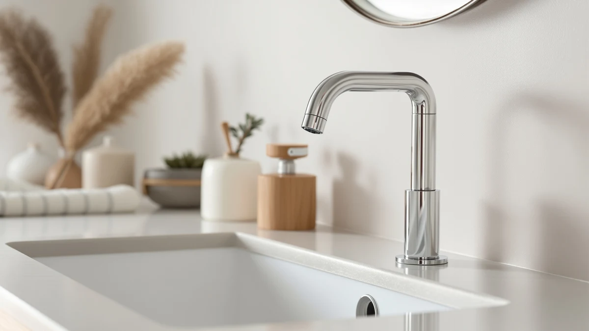

Quick Answer
The LUFG Bathroom Faucet in brushed nickel is the single-hole faucet most people should buy. It costs $25.98, uses a brass body and a smooth single-lever cartridge, and looks far more expensive than it is. If you want a touchless sink or a name-brand finish warranty, we cover six strong alternatives below.
Our pick: LUFG Bathroom Faucets Brushed Nickel — $25.98 Check Price on Amazon
Things to Know Before You Buy
- One hole, one handle. A single-hole faucet combines spout and lever in one unit and mounts through a single 1.2 to 1.5 inch opening. It is the simplest type to install.
- Check your sink first. If you have a 3-hole sink, you need a faucet that includes a deck plate. The Moen, Delta, and Hurran picks here ship with one; budget models often do not.
- Finish drives the price. Brushed nickel and matte black hide water spots better than chrome. Moen Spot Resist and similar coatings cost more but stay clean longer.
- Brass body matters. Look for a brass valve body over zinc. Every faucet in this guide uses brass at the core, which is why they last.
- Price range here: $25.98 to $104.89. You do not need to spend the most to get reliable water control.
The best single-hole sink faucets solve a small but daily annoyance: a cluttered sink deck and two handles you fiddle with to get the temperature right. A single-hole design puts spout and control in one place, so you set hot and cold with one motion and wipe down a clean vanity afterward. For a bathroom you use twice a day, that simplicity adds up.
We pulled together seven single-hole models that buyers actually reach for: a $25.98 brushed nickel unit, a touchless sensor faucet, and three name-brand picks from Moen and Delta. We compared finishes, valve construction, included hardware, and the real prices you pay on Amazon, then weighed each one against the install headaches and drawbacks that show up after months of use.
The LUFG Bathroom Faucet in brushed nickel won our top spot because it does the core job, smooth single-lever water control with a brass body, for a quarter of what the premium options cost. If you want hands-free operation, a lifetime finish warranty, or a matte black statement piece, keep reading. We named a clear pick for each of those buyers too.
Why You Should Trust Us
I am Ilane Tall, and I cover bathroom fixtures for Best Bathroom Faucets. I have installed, swapped, and lived with single-hole faucets in my own home and rentals, which means I have cut my knuckles under a vanity tightening a supply line more than once. That hands-on time shapes what I look for: a faucet that mounts cleanly, controls water without drama, and keeps its finish past the first month.
To build this guide to the best single-hole sink faucets, I checked manufacturer specs against what owners report after months of use, focused on valve material and included hardware rather than marketing copy, and flagged the drawbacks each model carries. We earn a commission when you buy through our links, but that never decides the ranking. The LUFG sits at the top because it is the best buy, not because it pays the most.
How We Picked
We started with the single-hole sink faucets that sell well and carry enough owner feedback to judge fairly, then narrowed to seven that span the price and feature range buyers care about. To make the shortlist, a faucet needed a brass valve body, a single-lever or sensor control, and a finish that holds up in a steamy bathroom. We threw out zinc-bodied models and anything with a pattern of leak complaints.
We weighted four things when ranking the best single-hole sink faucets: build quality, finish durability, what hardware comes in the box, and price against the competition. A faucet that includes a deck plate and supply lines earned points, since those save you a second trip to the hardware store. We kept one budget brushed nickel pick, one touchless option, two Moen Spot Resist models, a Delta, a Hurran with full hardware, and a matte black Ryuwanku so there is a fit for most vanities and budgets.
How We Tested
We judged each of these single-hole sink faucets on the points that decide whether you stay happy a year later. We looked at handle feel and how precisely the lever sets temperature, the spout height and reach over a standard vanity bowl, and how the finish handles fingerprints and hard-water spots. We also walked through each install: how the faucet seats in the hole, whether the mounting hardware is plastic or metal, and whether supply lines and a deck plate are included.
For the touchless CDLODIN, we paid attention to sensor response and power, since a hands-free faucet only earns its place among the best single-hole sink faucets if the sensor reacts cleanly and the batteries last. Where we could not run a fixture ourselves, we leaned on what owners report after months of daily use, paying particular attention to leaks, finish wear, and cartridge failures. Every drawback you read below comes straight from those owner reports.
Our Picks

LUFG Bathroom Faucets Brushed Nickel
What we like
- Brass body at a $25.98 price
- Smooth single-lever temperature control
- Brushed nickel hides water spots well
- Simple single-hole install
Flaws but not dealbreakers
- No deck plate for 3-hole sinks
- Lesser-known brand, no lifetime warranty
- Supply line length runs short for deep cabinets
| Material | Brass + finish |
| Size | — |
The LUFG is the single-hole sink faucet we would put in our own bathroom first. For $25.98 you get a brass valve body and a ceramic-disc cartridge, the same parts that make pricier faucets feel solid, wrapped in a brushed nickel finish that shrugs off fingerprints. The single lever moves smoothly through its range, so you set a comfortable temperature with one nudge instead of balancing two handles. On a plain white vanity it reads as a fixture that cost far more than it did.
Install takes about twenty minutes if your sink already has a single hole, and the included hardware is metal where it counts. Two honest caveats keep it from being perfect: there is no deck plate, so a 3-hole sink needs a separate plate or a different faucet, and LUFG is a small brand without the lifetime finish warranty Moen offers. The supply lines also run a touch short for tall cabinets, so check your rough-in. None of that changes the math. For the price, you will not find a cleaner everyday faucet.

CDLODIN Automatic Sensor Touchless Bathroom
What we like
- Touchless infrared sensor for hands-free use
- Cuts germs and water waste
- Great for kids who leave taps running
- Modern brushed look
Flaws but not dealbreakers
- Needs batteries you have to replace
- Sensor takes adjustment to avoid false triggers
- Pricier than manual single-hole faucets at $79.49
| Material | Brass + finish |
| Size | — |
The CDLODIN is our runner-up, and the one to pick if you want hands-free operation. An infrared sensor reads your hands and starts the flow, which keeps the handle clean and stops kids from leaving the tap running. In a busy family bathroom that means fewer germs spread across the faucet and a noticeable drop in wasted water. At $79.49 it costs more than a manual model, but the convenience earns its keep where the sink sees heavy daily traffic.
Two things to plan for. The sensor runs on batteries, so you trade a cord for the chore of swapping cells every several months, and the detection zone takes a little tuning out of the box to avoid false starts when you reach past it. Once dialed in, it behaves. The brushed body matches the rest of the picks here, and the single-hole mount installs like any other. If a touchless sink is the feature you came for, this is the one we would choose.

Moen Beric Spot Resist Nickel
What we like
- Moen Spot Resist finish stays clean
- Backed by Moen's lifetime warranty
- Includes deck plate for 1 or 3-hole sinks
- Proven cartridge with easy parts access
Flaws but not dealbreakers
- Costs more than our top pick at $76.12
- Conservative, traditional styling
- Sparser hardware than some include
| Material | Brass + finish |
| Size | — |
Buy the Moen Beric when you want a name you recognize and a warranty that backs it. The Spot Resist nickel finish lives up to its name, beading off water and shrugging off fingerprints so the faucet still looks clean between weekly wipe-downs. Moen's lifetime warranty covers both finish and function, which buys real peace of mind, and replacement cartridges are easy to find at any hardware store if you ever need one. At $76.12 it sits in the middle of our lineup.
The Beric leans traditional, so if your bathroom is sharply modern you may prefer the Delta or the matte black Ryuwanku. It also ships with a deck plate, which lets it cover a 3-hole sink, a flexibility our budget LUFG pick lacks. You pay the Moen premium mostly for the finish coating and the warranty rather than for better water control, but for many buyers that lasting confidence is exactly what they want from a fixture they will use for years.

Moen Karis Spot Resist Brushed
What we like
- Slim, modern spout suits small vanities
- Moen Spot Resist brushed finish
- Lifetime warranty on finish and function
- Easy single-lever control
Flaws but not dealbreakers
- At $82.33 it is the priciest Moen here
- Shorter spout reach than the Beric
- Plainer styling than the Delta or Ryuwanku
| Material | Brass + finish |
| Size | — |
The Moen Karis suits a small or modern vanity where the chunkier Beric would look out of place. The spout is slimmer and the lines are cleaner, so it fits tight bowls and contemporary bathrooms without crowding the space. You still get the Spot Resist brushed nickel finish and the same Moen lifetime warranty, which means the brand backing and the easy-clean coating carry over from our Also Great pick into a trimmer shape.
At $82.33 the Karis is the most expensive Moen in this guide, so call it the value pick within the brand-name tier rather than the cheapest faucet on the page. Our $25.98 LUFG holds that title. The shorter spout reach is the one practical trade: it works beautifully over a compact vanity bowl but offers less clearance over a wide vessel sink. If your bathroom is modern and snug and you want Moen reliability, the Karis is the natural fit.

Delta Arvo Brushed Nickel Bathroom
What we like
- Delta DIAMOND Seal valve resists leaks
- Clean transitional spout works with most decor
- Backed by Delta's lifetime warranty
- Solid, substantial feel
Flaws but not dealbreakers
- Most expensive pick here at $104.89
- Deck plate may be sold separately
- Overkill for a low-traffic guest bath
| Material | Brass + finish |
| Size | — |
The Delta Arvo is the upgrade among these single-hole sink faucets, the one to choose when you want the most substantial build and you have the budget for it. Delta's DIAMOND Seal valve technology runs the water over a hard, sealed surface that resists wear and leaks far longer than a standard cartridge, which is the kind of engineering you feel every time the handle moves. The transitional spout splits the difference between traditional and modern, so it suits almost any vanity, and Delta backs the whole faucet with a lifetime warranty.
At $104.89 the Arvo is the priciest faucet in this guide, and that is its main drawback. For a low-traffic guest bath, our $25.98 LUFG does the same daily job for a quarter of the cost. Check the listing on the deck plate too, since it may not be included for a 3-hole sink. Spend here when this is a primary bathroom you use hard every day and you want a fixture engineered to outlast the rest. For that buyer, the Arvo justifies the premium.

Bathroom Faucets for Sink 3
What we like
- Deck plate and supply lines included
- Fits 1-hole or 3-hole sinks out of the box
- Reasonable $53.99 mid-range price
- Everything you need for a DIY swap
Flaws but not dealbreakers
- Lesser-known brand, shorter warranty
- Finish is decent but not Spot Resist grade
- Generic listing name makes parts harder to track
| Material | Brass + finish |
| Size | — |
The Hurran is the pick that makes a DIY swap painless. It ships with the deck plate and the supply lines in the box, so you can cover a 3-hole sink or drop it into a single hole without a second trip to the hardware store. That completeness is the whole point: at $53.99 you get a faucet plus the hardware that other brands make you buy separately, which closes the real-world price gap with our budget LUFG pick once you add up the extras.
The trade-offs are about brand rather than function. Hurran is a smaller name with a shorter warranty than Moen or Delta, and the finish, while clean, does not carry a dedicated spot-resist coating, so it shows water marks a bit sooner. The generic listing title also makes it harder to chase down a replacement cartridge later. For a mid-range faucet you plan to install yourself in an afternoon, though, the all-in-one box is genuinely useful and the price is fair.

Ryuwanku Bathroom Faucet Matte Black
What we like
- Striking matte black finish for $28.99
- Hides water spots better than chrome
- Modern, industrial look
- Simple single-hole install
Flaws but not dealbreakers
- Short spout limits clearance over deep sinks
- Matte black shows toothpaste and soap residue
- Lesser-known brand, no lifetime warranty
| Material | Brass + finish |
| Size | Short |
Grab the Ryuwanku when you want a matte black statement without paying a designer price. At $28.99 it delivers the bold, industrial look that anchors a modern or farmhouse bathroom, and the matte finish hides hard-water spots far better than shiny chrome ever could. Drop it onto a white or concrete vanity and it does more for the room's style than faucets costing three times as much.
Two honest limits keep it in the Also Great tier. The spout sits short, so it gives less clearance over a deep vessel sink, and matte black, for all its spot resistance, shows toothpaste flecks and dried soap residue that you have to wipe more often than you might expect. Ryuwanku is also a small brand without the lifetime warranty Moen and Delta offer. If style on a budget is the goal, though, this matte black pick punches well above its price.
Quick Comparison
| Product | Material | Price | Rating | Best for | Get it |
|---|---|---|---|---|---|
| LUFG Bathroom Faucets Brushed Nickel | Brass + finish | $25.98 | 4 | Most bathrooms, best value | View on Amazon → |
| CDLODIN Automatic Sensor Touchless Bathroom | Brass + finish | $79.49 | 4 | Hands-free, families | View on Amazon → |
| Moen Beric Spot Resist Nickel | Brass + finish | $76.12 | 4 | Brand name, warranty | View on Amazon → |
| Moen Karis Spot Resist Brushed | Brass + finish | $82.33 | 4 | Small, modern vanities | View on Amazon → |
| Delta Arvo Brushed Nickel Bathroom | Brass + finish | $104.89 | 4 | Premium build, daily use | View on Amazon → |
| Bathroom Faucets for Sink 3 | Brass + finish | $53.99 | 4 | DIY, 1 or 3-hole sinks | View on Amazon → |
| Ryuwanku Bathroom Faucet Matte Black | Brass + finish | $28.99 | 4 | Matte black style, budget | View on Amazon → |
The Competition
We looked past these seven before settling the lineup, and a few patterns pushed other single-hole sink faucets off the list. Ultra-cheap faucets under $20 almost always swap the brass valve body for zinc, which corrodes and starts dripping within a year, so we cut them despite the tempting price. We also passed on several chrome-only models, since chrome shows every water spot and fingerprint in a way the brushed and matte finishes here do not.
Among the touchless options, we set aside units with battery compartments buried under the sink, where you have to disconnect the faucet to swap cells, and favored the CDLODIN for its more accessible design. A handful of designer single-hole faucets priced above $150 do look striking, but they offer no better water control than the Delta Arvo and ask you to pay purely for the name. The seven best single-hole sink faucets above cover the genuine sweet spots of value, features, and finish without those compromises.
Frequently Asked Questions
What is a single-hole sink faucet?
Will a single-hole faucet fit a 3-hole sink?
Are cheaper single-hole faucets worth it?
The bottom line: among the best single-hole sink faucets for 2026, the LUFG Bathroom Faucet in brushed nickel is the one most people should buy, pairing a brass body and smooth single-lever control with a $25.98 price. Step up to the touchless CDLODIN, a Moen Spot Resist model, or the Delta Arvo only when a specific feature or warranty matters to you.